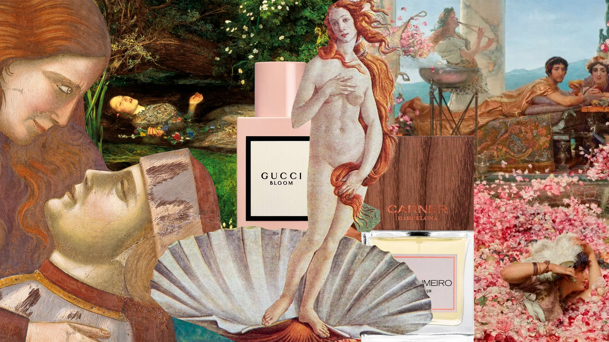

El arte de la fragancia
Por Valentina Ríos · 10 Septiembre 2026

Una fragancia puede ser un pasaje directo a un recuerdo. Para mí, el olor cítrico de la bergamota siempre me lleva a una mañana de verano en la playa, con la brisa salada y el sol recién despertando.
Notas que cuentan historias
Las notas de salida son como el primer saludo: frescas, chispeantes, llenas de energía. Las notas de corazón revelan la esencia, como un ramo de flores entregado en una cita inesperada. Y las notas de fondo son la memoria que permanece, cálida y envolvente como un abrazo en invierno.

Perfumes que marcan momentos
Dior Sauvage no es solo frescura: es rebeldía contenida en vidrio. Chanel Bleu transmite elegancia discreta, como un traje bien cortado. Paco Rabanne Invictus es energía pura, pensado para quienes conquistan cada día.
“Un perfume no se usa, se vive.”
Tips para elegir tu fragancia
- Para el día: cítricos y verdes, frescos y ligeros.
- Para la noche: especiados y orientales, intensos y seductores.
- Para ocasiones especiales: florales sofisticados o amaderados profundos.